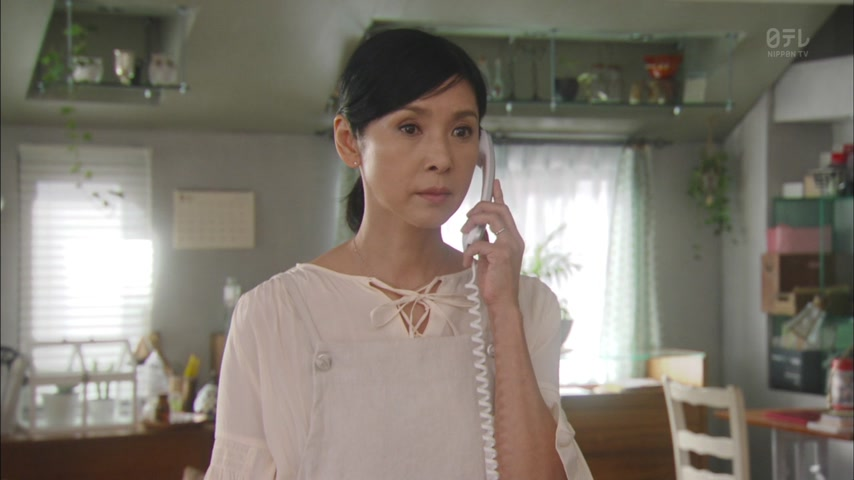

～たり～たりする

YouTube · video
観光地に行ったり、温泉に行ったりしました。
"We went sightseeing, went to hot springs, that kind of thing."
たり～たりする lists actions as examples: "things like A and B". There was more, these are just a few.
Take the past form and add り: 行った → 行ったり. Then end with する, which carries the tense and the politeness: しました. On this card, it answers "What did you do?": sightseeing, hot springs, stuff like that.
Compare て: 行って、行きました lists everything, in order. たり just picks a few examples.
Examples
A coworker asks about your weekend.
週末は、本を読んだり、映画を見たりしました。
"On the weekend I read, watched movies, that sort of thing."
読んだ → 読んだり. 見た → 見たり.
PoliteA friend asks what you do on the train.
音楽を聞いたり、寝たりしてる。
"I listen to music, sleep, stuff like that."
してる = している, casual.
CasualTalking about the weather.
最近、雨が降ったり止んだりしています。
"Lately it keeps raining on and off."
Two opposites: back and forth.
PoliteSomeone asks about your days off.
休みの日は、料理をしたりする。
"On my days off I do stuff like cooking."
One たり is fine too: "things like cooking".
CasualWith and without
本を読んで、映画を見ました。
"I read a book, then watched a movie." That's what I did, in order.
本を読んだり、映画を見たりしました。
"I read, watched movies, that kind of thing." Just examples, there was more.
Sentence mining

YouTube · video
その後も、ちょっと歩いたり見たりして、時間を潰しました。
"After that I walked around and looked at things, killing time."

YouTube · video
おむつを変えたり、ミルクを飲ませたり、いろいろお世話しないといけないです。
"Changing diapers, giving him milk: there's lots of looking after to do."

YouTube · video
このタイプのお財布を、「長財布」と呼んだりします。
"This kind of wallet is sometimes called a 'long wallet'."
One たり: "sometimes", one example of what people say.


Shirokuma Cafe · Episode 4
くちばしでつついたり…
"Pecking with its beak and stuff..."


Shirokuma Cafe · Episode 8
ファンレターとか、届いたりして
"We get fan letters and things."

Overprotected Kahoko · Episode 10
ケーキが壊れたり
"The cake got broken and stuff…"
壊れた + り: one example of what happened, with more left unsaid.